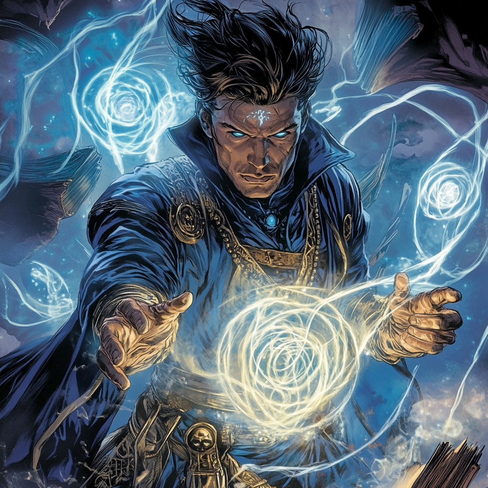

Runeweaver: The Scholar of the Arcane

The Weight of Knowledge
Dr. Alistair Graves was never meant for an ordinary life.
Born into a lineage of scholars, mystics, and occultists stretching back centuries, he was raised in the shadow of forbidden knowledge. His mother, Eleanor Graves, was a renowned archaeologist and expert in ancient civilizations, while his father, Benedict Graves, was something else entirely—a practitioner of true magic, a sorcerer dedicated to the unseen forces that shaped reality.
Alistair spent his childhood surrounded by forgotten tomes, whispered incantations, and stories of realms beyond human comprehension. While other children learned history from textbooks, he learned it from scrolls that smelled of old leather and power. While others played sports, he was memorizing runes of protection, testing the edges of the supernatural world.
But his father never forced magic upon him. “If you seek power for its own sake,” Benedict had warned, “it will consume you.”
So Alistair did what his father wanted. He studied.
By the time he was an adult, he had earned degrees in comparative mythology, history, and linguistics, eventually becoming a professor of Occult Studies at Harvard. He became respected for his insight into ancient magic systems, consulting with historians, cryptologists, and even certain clandestine government agencies when their research veered too close to things that should remain buried.
But all the while, he felt the pull—the knowledge his father had kept from him, the magic he had been told to resist.
Then, the barriers between worlds cracked, and Alistair could not ignore it any longer.
The Ritual That Changed Everything
It started as an anomaly, a mystical distortion detected on
an excavation site in Eastern Europe. Artifacts were found
etched with symbols older than recorded history, radiating a
power that even non-believers could feel in their bones.
Alistair was brought in to decipher the markings, expecting nothing more than an academic challenge. But as he translated the incantations, the air shimmered. The space trembled.
Something answered back.
A portal ripped open before him, revealing a place that should not exist—an endless void filled with wraith-like entities, beings of shadow and hunger, drawn to his presence.
Instinctively, Alistair spoke the words written in the book, the ones he had told himself were just mythology. Runes burned into the air as power surged through him. The Bolts of Balthakk lashed out, driving the creatures back. The Mists of Munnopor swirled, obscuring their sight. In desperation, he reached into the magic he had always studied but never wielded, summoning a gateway back to his world—his first true portal.
He survived. But something inside him had changed.
His magical potential had awakened fully, no longer theoretical, no longer academic. He had tapped into the ancient forces of the universe, and they had answered.
A Scholar No More
Harvard no longer felt like home. The lecture halls and
libraries, once his sanctuary, now seemed small, limiting,
blind to the greater mysteries of existence. While his
colleagues debated historical theories, he had stared into
the abyss and fought what lurked beyond it.
He wasn’t just an occult scholar anymore. He was a sorcerer.
But wielding magic meant more than just knowledge. It required discipline. Responsibility. And most importantly, purpose.
When the Boston Avengers Academy reached out, it wasn’t because they needed a warrior. It was because they needed a teacher who could bridge the gap between science and sorcery, someone who could train young heroes to wield magic responsibly.
Alistair saw his new path clearly.
The Runeweaver Rises
Taking on the name Runeweaver, Alistair became both a mentor
and a protector at BAA. He trained those with untapped
magical potential, ensuring they did not repeat the mistakes
of the past. He guided those who dabbled in the arcane,
ensuring they understood the price of power.
As a member of Team Gamma, he wasn’t the bruiser or the brawler. He was the strategist, the mystic anchor, the one who could summon a portal at the last second, who could cloak his team in illusions, who could bind an enemy with eldritch energy before they even knew what had happened.
He brought more than just magic to the team—he brought wisdom, the ability to see through deception, to plan for what lurked beyond the material world. His presence made his teammates think twice before acting rashly—because if Runeweaver was worried, then something was truly wrong.
The Scholar and the Sorcerer
Despite his place in BAA, Alistair never abandoned his
academic roots. He still lectures at Harvard, his course on
Occult and Mythological Studies is one of the most
mysterious and highly attended. Many assume his knowledge is
just historical.
Those who know better? They recognize the wards carved into his office door, the artifacts sealed behind enchanted glass, and the way shadows move just a little too deliberately around him.
Alistair Graves once sought understanding. Now, he seeks balance—between knowledge and power, magic and responsibility, the world of men and the realms beyond.
Because some doors must never be opened. And some evils must never return.